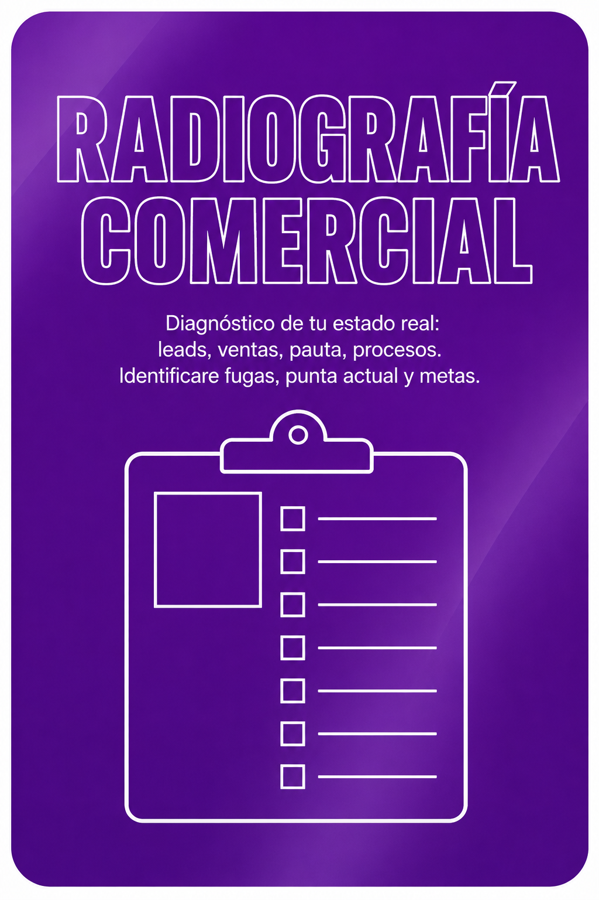

Transformo ventas que dependen del dueño en un sistema comercial predecible y escalable en 12 semanas.
Agendar diagnóstico estratégico
SOBRE MÍ
Durante más de 10 años fui dueña de negocio. Sentí en carne propia el dolor de sacar plata de donde no había, de contratar un closer que aprendía y se iba, de tener todo en la cabeza y nada documentado. Por eso construí CLOSE-PREDICT™: el sistema que ordena lo que a la mayoría de los dueños los tiene apagando incendios.